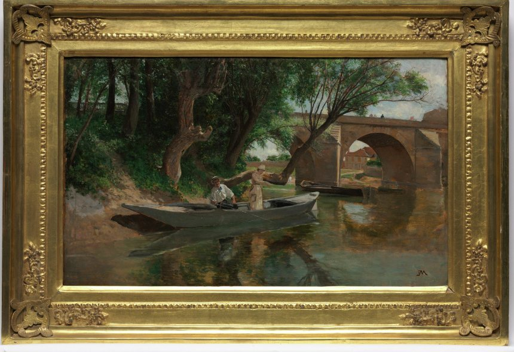

Why consecutive days
A weekly hour runs out fast. You open something difficult, and then it’s time to put your shoes on and drive home. An intensive gives the work room, including time to settle before you leave.
Therapists who have shared clients with Sarah describe people coming back with clearer memories, a different view of their own story, and beliefs they had only understood in their heads now feeling true.
Is it right for you
It isn’t for everyone, and Sarah decides case by case. It fits best if you’re already in regular therapy, your therapist is willing to coordinate, and you’re ready to commit to a hard few days.
An intensive is usually not a fit if:
- You’re pregnant
- You’re in a legal case connected to the trauma
- You have a significant heart, breathing, or neurological condition and no clearance from your physician
- You’re early in therapy and dissociate a great deal
Dissociation, self-harm, and thoughts of suicide don’t automatically rule you out. Sarah looks at each situation carefully with you and your therapist.

Some crossings are better made in one go.
Hover the picture to light itHow to set one up
- Talk with your current therapist about the idea.
- Call or write to schedule a first consultation. If you’re outside Denver, it can happen by video.
- Sign a release so Sarah can speak with your therapist.
- If it’s a fit, you choose dates together and Sarah sends what you need to prepare.
For referring therapists
Sarah will call you before anything is scheduled. She may ask you to consider the MID, an assessment for structural dissociation, and she pays particular attention to clients with early attachment injuries. You stay the primary therapist throughout.
Her consultation and training for clinicians are at sarahfreezelcsw.com.
Questions people ask
How much does an intensive cost?
It depends on the number of days. Sarah goes over fees on the consultation call.
Do I have to live in Denver?
No. People travel for intensives, and the first consultation can happen by video.
Sarah Freeze
Sarah has spent most of her career with adults who were abused or neglected as children.
Her weekly practice is full. She offers EMDR intensives, supervises the clinical work at Curio, and teaches EMDR to other therapists.
Ask Sarah about an intensiveMore about Sarah